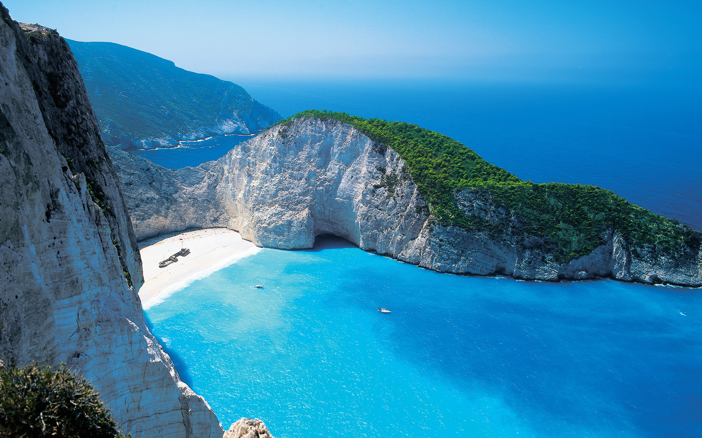
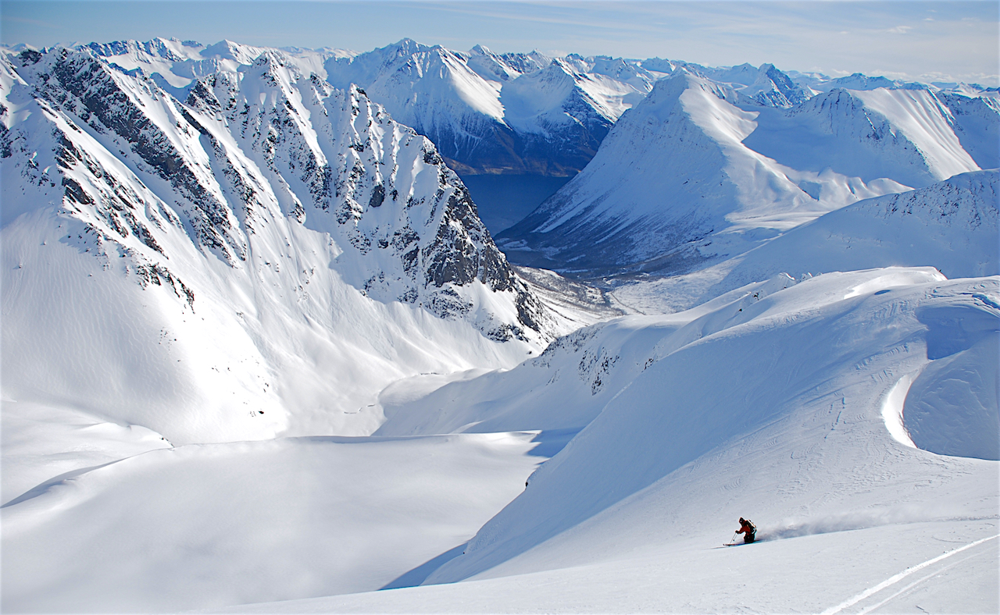
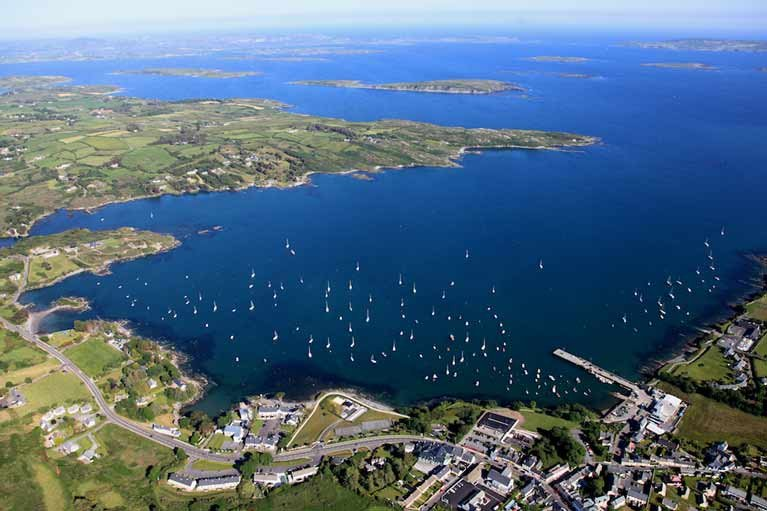

Last June I went on a holiday to Greece with my family. We left Cork on the 16th of June And arrived in Athens on the 17th. We spent 1 week in the capital of Athens. Following that we ventured to to the coast, and spent another week in a holiday resort. Each day the afternoon weather did not drop below 25 degrees. It was truly a lovely experience. 
As part of our Transitio Year programme we went on a ski trip to Norway. We went during the easter holiday weeks for a a total of 8 days, 5 of which we hot the slopes. Overall it was a very fun experience. I had plenty of practice beforehand on personal family holidays. This resulted in me being in the advanced group which was very challenging but worthwhile. 
Every summer my family and I go to Schull in West Cork. We leave Cork City in the morning time usually and make a day trip out of the journey. We stay in Schull for roughly four weeks all going well. Quite often we will return to Cork City for a day to carry out a big shop for the week. I look forward to the trip each year. 